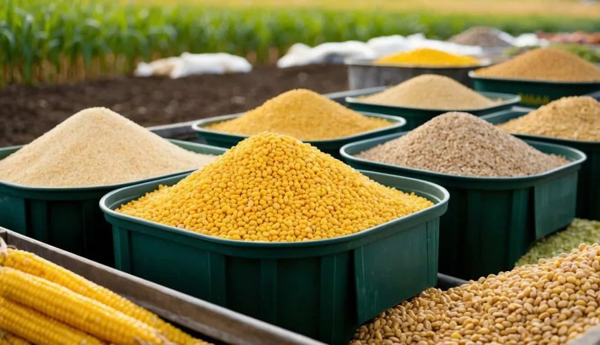

Lösungsansätze · Thema 2
Tierhaltung
Von Futterzusätzen bis zur Politik – wie ökologische Tierhaltung das Klima schützt, Tiere würdigt und Betriebe zukunftsfähig macht.
Von Futterzusätzen bis zur Politik – wie ökologische Tierhaltung das Klima schützt, Tiere würdigt und Betriebe zukunftsfähig macht.
Tierhaltung ist einer der größten Verursacher von Treibhausgasen in der Landwirtschaft – gleichzeitig bietet sie enormes Potenzial für Verbesserungen. Mit gezielten Maßnahmen in Fütterung, Zucht, Gülleverwertung und politischer Steuerung lässt sich der ökologische Fußabdruck massiv reduzieren.
Bestimmte Futterzusätze können die Methanbildung im Verdauungssystem von Rindern deutlich reduzieren. Ein Beispiel ist 3-NOP (3-Nitrooxypropanol). Dieser Stoff hemmt ein Enzym, das bei der Methanbildung im Pansen beteiligt ist. Studien zeigen, dass dadurch etwa 20–40 % weniger Methan entstehen kann. Auch Rotalgen (z. B. Asparagopsis) enthalten Stoffe wie Bromoform, die die Methanproduktion sogar um bis zu 80 % verringern können. Allerdings gibt es noch Herausforderungen, zum Beispiel hohe Kosten, begrenzte Verfügbarkeit und ungeklärte Langzeitwirkungen.

Eine weitere Möglichkeit ist die Zucht von Rindern mit geringerer Methanintensität. Dabei werden gezielt Tiere ausgewählt, die von Natur aus weniger Methan produzieren. Diese werden dann für die weitere Zucht genutzt. Der Vorteil dieser Methode ist, dass sie dauerhafte Verbesserungen bringen kann. Allerdings dauert es relativ lange, bis sich die Effekte zeigen, da mehrere Generationen von Tieren nötig sind.
Bei der Lagerung von Gülle entstehen ebenfalls große Mengen Methan. Eine einfache Maßnahme ist die Abdeckung von Güllelagern, wodurch die Emissionen um etwa 60–80 % reduziert werden können. Eine weitere Möglichkeit ist die Nutzung von Gülle in Biogasanlagen. Dort wird das entstehende Methan aufgefangen und zur Strom- und Wärmeproduktion genutzt, anstatt unkontrolliert in die Atmosphäre zu gelangen.
Agroforstsysteme verbinden Landwirtschaft mit dem Anbau von Bäumen auf Wiesen oder Feldern. Die Bäume bieten Tieren Schatten, wodurch Hitzestress reduziert wird. Gleichzeitig speichern sie CO₂ im Holz und tragen so zum Klimaschutz bei. Zusätzlich verbessern sie das Mikroklima und können die Biodiversität in landwirtschaftlichen Gebieten fördern.

Viele der ökologisch sinnvollen Maßnahmen scheitern nicht am fehlenden Wissen, sondern an fehlenden Anreizen oder falschen Fehlanreizen. Politische Instrumente sind entscheidend, um den Wandel in der Tierhaltung zu beschleunigen.
Die EU-Agrarpolitik (GAP) subventioniert derzeit noch überwiegend Flächengröße statt Umweltleistung. Eine Umschichtung der Direktzahlungen hin zu Öko-Prämien, Tierwohl-Boni und Agroforstzuschüssen würde die richtigen Signale setzen.
Eine konsequente Bepreisung von Methan- und Lachgasemissionen aus der Tierhaltung schafft Anreize zur Emissionsreduktion.
Verbindliche staatliche Haltungskennzeichnung ermöglicht es Verbraucherinnen, bewusst ökologisch zu wählen und schafft Marktnachfrage.
Investitionszuschüsse für Güllevergärung und Separationstechnik senken die hohen Einstiegskosten für kleinere Betriebe.
Freiwillige Abbauprogramme mit fairer Entschädigung helfen überdimensionierten Regionen, Bestände nachhaltig zu reduzieren.
Mehr Mittel für die Erforschung natürlicher Futterzusätze, Zuchtprogramme und klimaresilienter Weidepflanzen beschleunigen den Fortschritt.
Eine konsequente Ökologisierung der Gemeinsamen Agrarpolitik – Prämien für Leistung statt Fläche – ist der wichtigste politische Hebel.
Natürliche Futterzusätze und optimierte Weideflächen senken den Methanausstoß von Wiederkäuern erheblich.
Robuste Zweinutzungsrassen leben länger, brauchen weniger Medikamente und liefern dabei bessere Ökobilanz.
Durch Biogasnutzung und präzise Ausbringung wird Gülle vom Umweltproblem zum wertvollen Energieträger.
Agroforstsysteme verbinden Tierwohl, CO₂-Bindung und Bodenschutz auf derselben Fläche.
Nur mit den richtigen Anreizen und Regeln können Betriebe den Wandel wirtschaftlich tragbar umsetzen.